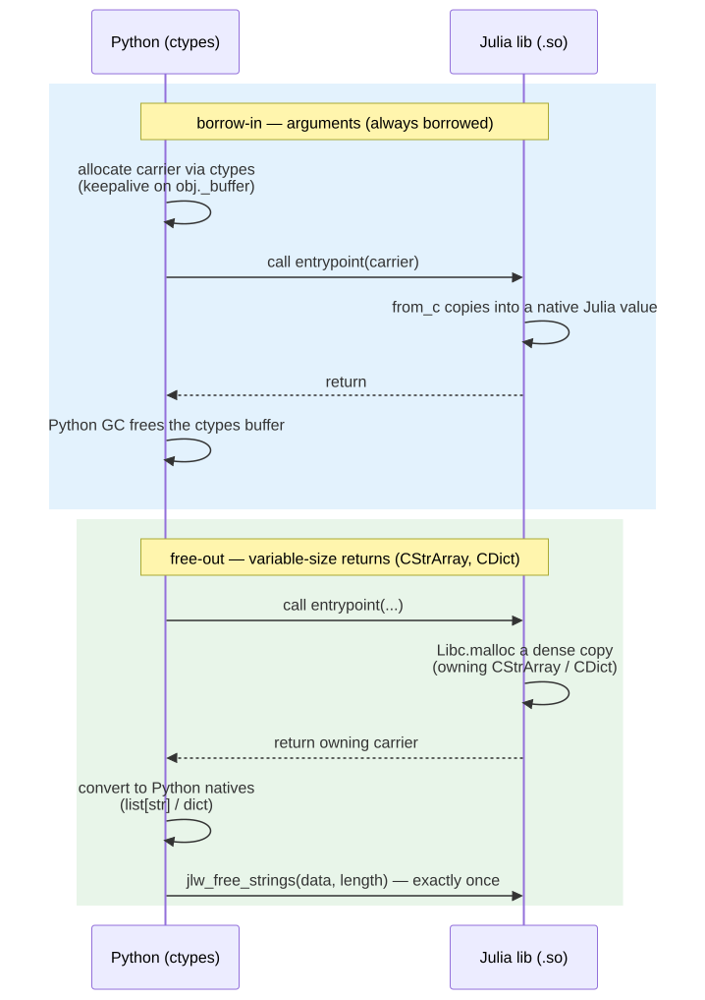

L1 carriers: CStrArray, CDict, COpt
This page documents the Layer-1 shared carriers added to JLWInterop for variable-size and optional data: an array of strings, a string-keyed dictionary, and an optional scalar. They sit alongside the CArray/CString/JLWStatus vocabulary described in JLWInterop and follow the same recognition convention — the JuliaLibWrapping Python emitter matches a struct by name plus field shape, not by package identity, so a copy-pasted compatible definition still gets the generated helpers. CArray shares this page's owned-field ownership contract too (see below); its full ownership prose lives on the JLWInterop page alongside its other layout details.
Where they sit in the layer plan
JuliaLibWrapping's design is layered: juliac compiles and emits a pure C-ABI description with no semantic metadata; JLWInterop is the shared vocabulary of carrier types that give that metadata meaning; a future annotation layer will let users opt into richer bindings; and each target language's emitter (Python today, MATLAB via Mexicah) consumes the same L1 types.
Diagram source:
docs/src/assets/l1-layers.mmd; regenerate withmmdc -i l1-layers.mmd -o l1-layers.svg -b transparent.
Struct layouts
All three carriers are plain isbits-when-possible structs with a fixed C layout. Field order matches declaration order; the compiler inserts padding only where alignment requires it (see COpt below).

Diagram source:
docs/src/assets/carrier-layouts.mmd; regenerate withmmdc -i carrier-layouts.mmd -o carrier-layouts.svg -b transparent.
Ownership contract
The data says who owns it. CStrArray, CDict, and CArray each carry an explicit owned::Int32 field — 0 means caller-owned/borrowed, 1 means allocated by Julia's own-out constructor — and every consumer, on both sides of the boundary, reads that field rather than inferring ownership from which direction the value happened to cross. There is no partial ownership: the flag covers the whole struct as a single unit (for CStrArray, data and every per-string buffer it points to; for CDict, keys and values together; for CArray, the single data allocation). Julia never retains a reference to an owned = 1 buffer once it hands it across the boundary.
This replaces inferring ownership from call direction ("arguments are always borrowed, returns always own") with a value that survives being passed through unchanged. A function that returns one of its own CStrArray/CDict arguments — a legitimate pattern, e.g. a validate-and-pass-through helper — returns a value whose owned field is still 0, exactly as the caller built it; nothing downstream frees it. CArray's default constructors (the tuple-form and scalar-form ones used to build a view over caller-supplied storage) likewise always set owned = 0 — today's, pre-flag semantics, unchanged; only the new CArray(::AbstractArray) own-out constructor sets owned = 1. See CArray for the full contract.
Two patterns still cover the common cases, following the same "borrow-in stays universal; ownership enters only on variable-size returns" split used by libraries like libgit2 and sqlite3_free — but the flag, not the pattern, is what a consumer actually checks:
- Arguments are borrowed (
owned = 0). The generated Python helper builds the carrier viactypes, setsowned=0explicitly, and keeps a reference alive on the returned object (obj._buffer, the same keepalive patternCArray.from_numpyandCString.from_stralready use). The Julia-side conversion (Base.Dict,Base.Vector{String}, …) copies the data into a fresh native Julia value and never frees the caller's buffers — regardless of whatownedsays, since borrow-in never branches on it at all. Python's own garbage collector frees thectypesbuffer once nothing references it. - Variable-size own-out returns set
owned = 1. When a Julia function returns a freshly builtCStrArrayorCDict(viaCStrArray(::Vector{String})/CDict(::Dict{String,V})), JuliaLibc.mallocs a dense copy of the data and the constructor setsowned = 1. The generated Python wrapper converts the buffer into idiomatic Python objects (list[str]/dict) inside atry, then unconditionally calls.free()(see below) in afinally— releasing the Julia-owned memory through the wrapped library's own exported release entrypoints (see@export_release_entrypointsbelow) whenowned = 1, and doing nothing whenowned = 0. A pass-through return is converted the same way but never freed. COptis by-value. It carries no pointer and no ownership field — needs no ownership handling in either direction — seeCOpt{T}.
Both the façade's finally above and a caller who bypasses the façade and talks to _lowlevel directly go through the same .free() method on CStrArray/CDict (and CArray)'s generated ctypes.Structure classes: a genuine no-op when the value was never owned, regardless of whether the library exports release entrypoints; releases the buffer(s) and clears owned back to 0 when it was owned and release entrypoints exist; otherwise raises RuntimeError. Idempotent either way — a second call is always a no-op.

Diagram source:
docs/src/assets/ownership-seq.mmd; regenerate withmmdc -i ownership-seq.mmd -o ownership-seq.svg -b transparent.
Rejected alternative, for the record: a caller-allocated two-call protocol (ask for the size, allocate, call again to fill) was considered and rejected — an arbitrary user callee cannot safely run twice without duplicating side effects, and caching the first call's result would need registry state that the rest of this design deliberately avoids.
CStrArray — an array of strings
struct CStrArray
length::Int64
data::Ptr{CString} # each element a length-prefixed CString
owned::Int32 # 0 = caller-owned/borrowed; 1 = allocated by the own-out constructor
end| Julia | Python |
|---|---|
Vector{String} | list[str] |
- Borrow-in (
Base.Vector{String}(a::CStrArray)): copies the strings out into a freshVector{String}; never freesa.dataor the per-string buffers, regardless ofa.owned. The Python side builds the carrier withCStrArray.from_list, which setsowned=0explicitly and keeps(bufs, arr)alive onobj._buffer. - Own-out (
CStrArray(v::Vector{String})):Libc.mallocs theCStringarray and each per-string buffer, and setsowned = 1. The generated Python wrapper reads the result with.as_list(), then, iffresult.owned == 1, releases the buffers with_lowlevel._lib.jlw_free_strings(result.data, result.length). A returned value withowned = 0(e.g. a pass-through of a borrowed argument) is converted the same way but never freed.
Each element's own length is CString's Int32, so a single string over ~2 GiB fails loud with an InexactError rather than silently truncating.
JLWInterop.CStrArray — Type
CStrArrayOwning-or-borrowed C-ABI descriptor for an array of UTF-8 strings: length elements at data, each a length-prefixed CString (16 bytes, not NUL-terminated; embedded NUL bytes are allowed). Each element's own length is CString's Int32, so a single string over ~2 GiB fails loud with an InexactError in the own-out constructor rather than silently truncating.
Ownership contract
Ownership is carried explicitly in the data, via the owned field — never inferred from which direction a value happens to cross the boundary. owned = 0 means caller-owned/borrowed: nothing here frees it. owned = 1 means Julia's own-out constructor allocated it: it must be released exactly once. There is no partial ownership — the flag covers the whole struct (data and every per-string buffer it points to) as a single unit.
Base.Vector{String}(a::CStrArray)borrows: it copies the strings out into a fresh JuliaVector{String}and never freesa.dataor any of the per-string buffers, regardless ofa.owned. The caller retains ownership.CStrArray(v::Vector{String})owns out: itLibc.mallocs theCStringarray and each per-string buffer, and setsownedto1. The consumer is responsible for releasing them exactly once, viaJLWInterop._free_strings(or, at a@ccallableboundary,jlw_free_stringsfrom@export_release_entrypoints).- Julia never retains a reference to an
owned = 1buffer once it has handed it across the boundary — the whole point of the flag is that the receiving side can tell, from the value alone, whether it must free.
Example
using JLWInterop
a = CStrArray(["hello", "world"])
a.owned == Int32(1)
Vector{String}(a) == ["hello", "world"]
JLWInterop._free_strings(a.data, a.length)CDict{V} — a string-keyed dictionary
struct CDict{V}
length::Int64
keys::Ptr{CString}
values::Ptr{V}
owned::Int32 # 0 = caller-owned/borrowed; 1 = allocated by the own-out constructor
end| Julia | Python |
|---|---|
Dict{String,V} for V in CDICT_VALUE_TYPES | dict[str, V] |
V is a closed, trim-safe allowlist of 11 scalar types (CDICT_VALUE_TYPES) — the per-V conversion methods are generated only for those types, so an unsupported V fails as a MethodError at the call site rather than compiling something unsound. Each key's own length is CString's Int32, so a single key over ~2 GiB fails loud with an InexactError rather than silently truncating.
- Borrow-in (
Base.Dict{String,V}(d::CDict{V})): copies keys and values out into a freshDict; never freesd.keys, the per-key buffers, ord.values, regardless ofd.owned. The Python side builds the carrier withCDict.from_dict, which setsowned=0explicitly. - Own-out (
CDict(d::Dict{String,V})):Libc.mallocs the keyCStringarray, each per-key buffer, and the value array — two separate allocations — and setsowned = 1. The generated Python wrapper reads the result with.as_dict(), then, iffresult.owned == 1, releases both: the keys via_lowlevel._lib.jlw_free_strings(result.keys, result.length)and the values via_lowlevel._lib.jlw_free(ctypes.cast(result.values, ctypes.c_void_p)). A returned value withowned = 0is converted the same way but never freed.
JLWInterop.CDict — Type
CDict{V}Owning-or-borrowed C-ABI descriptor for a Dict{String,V}: length key/value pairs, keys as length-prefixed CStrings at keys, values as a parallel array of V at values. V is restricted to CDICT_VALUE_TYPES; the allowlist is enforced structurally — the per-V conversion methods below are the only ones generated, so a disallowed V fails as a MethodError at the call site. Each key's own length is CString's Int32, so a single key over ~2 GiB fails loud with an InexactError in the own-out constructor rather than silently truncating.
Ownership contract
Ownership is carried explicitly in the data, via the owned field — never inferred from which direction a value happens to cross the boundary. owned = 0 means caller-owned/borrowed: nothing here frees it. owned = 1 means Julia's own-out constructor allocated it: it must be released exactly once. There is no partial ownership — the flag covers the whole struct (keys and values, and every per-key buffer keys points to) as a single unit.
Base.Dict{String,V}(d::CDict{V})borrows: it copies keys and values out into a fresh JuliaDictand never freesd.keys, the per-key buffers, ord.values, regardless ofd.owned. The caller retains ownership.CDict(d::Dict{String,V})owns out: itLibc.mallocs the keyCStringarray, each per-key buffer, and the value array, and setsownedto1. The consumer must release them exactly once: the keys viaJLWInterop._free_strings(orjlw_free_stringsfrom@export_release_entrypoints) andvaluesviaLibc.free(orjlw_free).- Julia never retains a reference to an
owned = 1buffer once it has handed it across the boundary.
Example
using JLWInterop
c = CDict(Dict("a" => 1.5, "b" => -2.0))
c.owned == Int32(1)
Dict{String,Float64}(c) == Dict("a" => 1.5, "b" => -2.0)
JLWInterop._free_strings(c.keys, c.length)
Libc.free(c.values)JLWInterop.CDICT_VALUE_TYPES — Constant
CDICT_VALUE_TYPESThe V types CDict{V} supports. Per-V methods are generated only for these types (a closed, trim-safe allowlist), so CDict(::Dict{String,V}) for any other V throws MethodError rather than silently miscompiling or requiring dynamic dispatch.
COpt{T} — an optional scalar
struct COpt{T}
has_value::Int32
value::T
end| Julia | Python |
|---|---|
Union{T,Nothing} for scalar T | T | None |
has_value is Int32 (not Bool) so the struct stays a portable, four-byte discriminant across languages; 1 means present, 0 means absent. value is always inline — zero-filled in the absent branch, per the COpt{T}(nothing) constructor — so the struct stays isbits, needs no heap allocation, and needs no ownership handling in either direction: from_optional/as_optional on the Python side are plain field reads, with no _buffer keepalive and no release call.
JLWInterop.COpt — Type
COpt{T}C-ABI descriptor for Union{T,Nothing}: a discriminant has_value (present = 1, absent = 0) alongside an inline value::T, always present (but meaningless / zero-filled in the absent branch) so the struct stays isbits and needs no allocation or ownership handling in either direction.
Construct with COpt(x) (present) or COpt{T}(nothing) (absent, zero-filled); read back with unwrap.
Example
using JLWInterop
unwrap(COpt(3.5)) === 3.5
isnothing(unwrap(COpt{Float64}(nothing)))JLWInterop.unwrap — Function
unwrap(o::COpt{T}) -> Union{T,Nothing}Read a COpt{T} back into a native Union{T,Nothing}: nothing in the absent branch, otherwise o.value.
@export_release_entrypoints — required for owning returns
A library that returns CStrArray or CDict from any entrypoint must call JLWInterop.@export_release_entrypoints once, at top level of its entry module:
using JLWInterop
JLWInterop.@export_release_entrypointsThis emits two @ccallable functions — jlw_free and jlw_free_strings — that the generated Python façade calls to release Julia-malloc'd buffers (see Ownership contract above). The macro-emitted @ccallables reach the ABI JSON exactly like any other @ccallable-annotated function, so no extra emitter-side plumbing is needed to make them visible.
Without it, the ABI JSON carries no ownership metadata at all — this is a fundamental limitation of a pure C-ABI description, not a bug — so _release_symbols_present cannot find jlw_free/jlw_free_strings among the library's exported symbols. Rather than emit a façade call to a symbol that does not exist, the emitter refuses to auto-wrap the owning return and falls back to a mechanical re-export with a TODO comment. The exact text a user sees in the generated _facade.py is:
from ._lowlevel import my_func # TODO: hand-wrap — owning return needs release entrypoints; add JLWInterop.@export_release_entrypoints to the libraryAdd the macro call and regenerate (write_wrapper/build_library again) to turn that into a full list[str]/dict-returning wrapper.
JLWInterop.@export_release_entrypoints — Macro
@export_release_entrypointsEmit the two C-callable release functions a wrapped library must export when it returns owning carriers (CArray, CStrArray, CDict): jlw_free frees one malloc'd block (also what releases an own-out CArray's data); jlw_free_strings frees n CString-element strings and their array. Generated wrappers call them exactly once per returned value, via the library's own handle. Place at top level of the entry module.
JLWInterop._free_strings — Function
JLWInterop._free_strings(p::Ptr{CString}, n::Int64)Free n string buffers pointed to by the CStrings at p (each one's .data), then free p itself. Matches the allocation made by CStrArray(::Vector{String}). Internal; exposed at a @ccallable boundary as jlw_free_strings by @export_release_entrypoints.
Free exactly once, always via the same package's _lib
Every malloc backing an owning CStrArray/CDict return must be freed exactly once, and only through the jlw_free/jlw_free_strings symbols resolved from that same package's own _lib (the ctypes.CDLL handle _lowlevel.py opens for the wrapped shared library) — never through Python's ctypes allocator, never through a different wrapped library's _lib, and never twice. Two reasons this matters:
- Symbol resolution is per-handle.
jlw_free/jlw_free_stringsare ordinary C symbols exported by the wrapped.so; two different wrapped libraries each export their own copies. Calling library A's_lib.jlw_freeon a pointer that library B'sLibc.mallocproduced is undefined behavior even though both symbols have the same name and signature — they may be backed by differentlibcs (statically linked, or dynamically linked against different C library builds) with incompatible heaps. Per-CDLL-handle lookup is exactly what keeps two wrapped libraries from colliding: malloc and free stay within the one library that performed the allocation. - Freeing twice, or freeing a borrowed pointer, corrupts the heap. This is exactly the double-free the
ownedfield exists to prevent: a function that returns one of its ownCStrArray/CDictarguments unchanged (pass-through) hands back a value withowned = 0, and.free()— a genuine no-op at that flag value — never calls the release entrypoint on it. The façade converts the carrier to native Python objects inside atry, then calls.free()unconditionally in afinally: idempotent, so correct whether or not the result actually owns anything, and it runs even if the conversion itself raises. Hand-written code that bypasses the façade and talks to_lowleveldirectly should use the same try/.free()-in-finallyshape, or at minimum call.free()— never the release entrypoint directly — exactly once after conversion.
Scope note: carriers are ctypes-target-side
CStrArray, CDict, and COpt describe C-ABI layouts consumed by the Python ctypes emitter (and any other target that talks raw C structs). MATLAB's Mexicah target does not use these struct layouts — its carrier remains mxArray, MATLAB's own native array type, produced and consumed through the MEX C API rather than ctypes.Structure. What the two targets share is not the struct layout but the protocol: the Julia↔target type-mapping table (this page's tables), and the ownership discipline (borrow-in for arguments, own-out-then-free-exactly-once for variable-size returns, by-value for optionals). A future MATLAB carrier would reuse that discipline while mapping onto mxArray's own allocation and lifetime rules, not onto CStrArray/CDict/COpt.